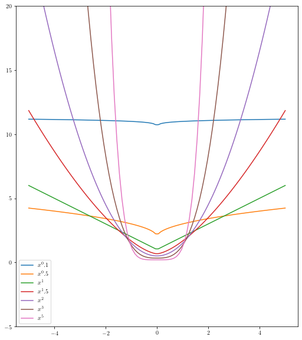
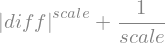
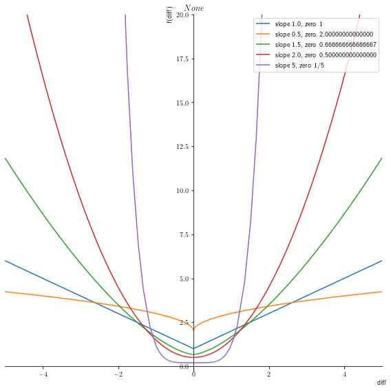
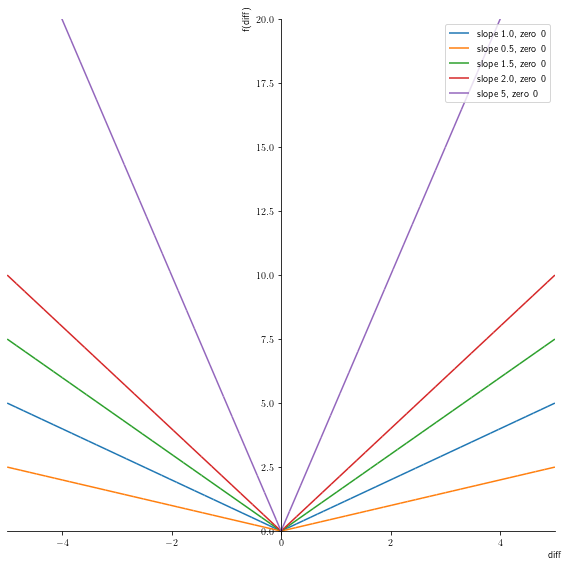
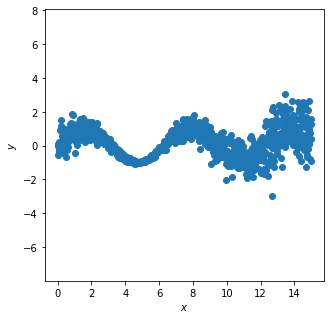
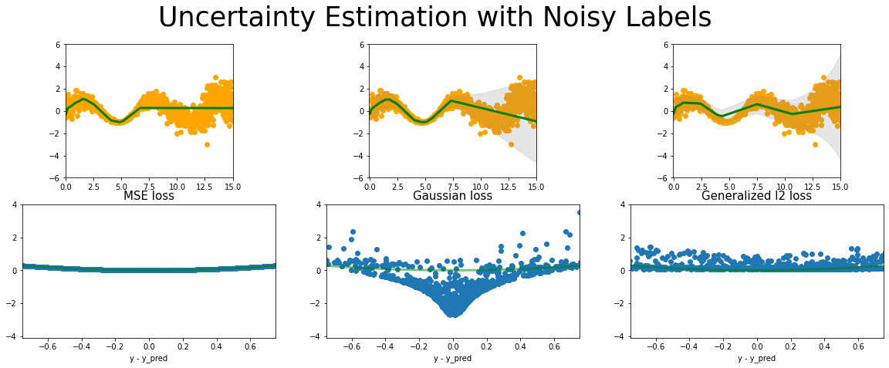

import numpy as np
import matplotlib.pyplot as plt
General Loss Function
The l2 loss function also called the mean square error is the most common loss function. The another varition of the loss function is the l1 loss.
The problem with l1 and l2 are that they are not robust to outliers. So can we have a general loss function.
The experiments are not promising but we should look into the “robust loss function” for more details
x = np.linspace(-5, 5, 100)
_, ax = plt.subplots(1, 1)
for i in [0.1, 0.5, 1, 1.5, 2, 3, 5]:
ax.plot(x, np.abs(x)**i + 1/i, label=r"$x^{}$".format(i))
ax.set_ylim(-5,20)
ax.set_aspect(0.5)
ax.legend()<matplotlib.legend.Legend at 0x7f9ef2089b50>
diff, scale = sym.symbols('diff, scale')equation = sym.Abs(diff)**scale + 1/scale
equation
\[ \left|{diff}\right|^{scale} + \frac{1}{scale} \]
#hide_code
p1 = symplot.plot(equation.subs([(scale,1)]), (diff,-5,5), show=False, title = r"$ {} $".format(print_latex(equation)))
p1[0].label = 'slope 1.0, zero %s'% (str(equation.subs([(scale,1), (diff,0)])))
i=0
for s in [0.5, 1.5, 2., 5]:
p = symplot.plot(equation.subs([(scale,s)]), (diff,-5,5), show=False, line_color=color[i%len(color)+1])
p[0].label = 'slope %s, zero %s'% (str(s),str(equation.subs([(scale,s), (diff,0)])))
p1.append(p[0])
i = i+1
p1.legend = True
p1.ylim = (-0.3, 20)
p1.xlim = (-5., 5)
p1.size = (8,8)
p1.show()
plt.savefig('general_loss_function.png')\left|{diff}\right|^{scale} + \frac{1}{scale}
<Figure size 1800x720 with 0 Axes>Gradients of the equation
diff_equation = scale * sym.Abs(diff)
diff_equation#hide_code
p1 = symplot.plot(diff_equation.subs([(scale,1)]), (diff,-5,5), show=False)
p1[0].label = 'slope 1.0, zero %s'% (str(diff_equation.subs([(scale,1), (diff,0)])))
i=0
for s in [0.5, 1.5, 2., 5]:
p = symplot.plot(diff_equation.subs([(scale,s)]), (diff,-5,5), show=False, line_color=color[i%len(color)+1])
p[0].label = 'slope %s, zero %s'% (str(s),str(diff_equation.subs([(scale,s), (diff,0)])))
p1.append(p[0])
i = i+1
p1.legend = True
p1.ylim = (-0.3, 20)
p1.xlim = (-5., 5)
p1.size = (8,8)
p1.show()
Toy dataset
fitting loss function to the gnerl l2 loss .
#hide_code
def synthetic_sine_heteroscedastic(
n_points: int = 10,
) -> Tuple[np.ndarray, np.ndarray, np.ndarray, np.ndarray]:
"""Return samples from "synthetic sine" heteroscedastic noisy function.
This returns a synthetic dataset which can be used to train and assess a predictive
uncertainty model.
Args:
n_points: The number of data points in the set.
Returns:
- Predicted output points y.
- Predictive uncertainties, defined using standard deviation of added noise.
- True output points y.
- True input points x.
"""
bounds = [0, 15]
x = np.linspace(bounds[0], bounds[1], n_points)
f = np.sin(x)
std = 0.01 + np.abs(x - 5.0) / 10.0
noise = np.random.normal(scale=std)
y = f + noise
return f, std, y, x
_, _, y, x = synthetic_sine_heteroscedastic(1000)
x = torch.Tensor(x)
y = torch.Tensor(y)
x = torch.unsqueeze(x, dim=1)
y = torch.unsqueeze(y, dim=1)
#| include: false
fig, ax = plt.subplots(figsize=(5,5))
ax.scatter(x.data.numpy(),y.data.numpy())
ax.axis('equal')
ax.set_xlabel('$x$')
ax.set_ylabel('$y$')
ax.axis("equal")
# this is one way to define a network
class Net(torch.nn.Module):
def __init__(self, n_feature, n_hidden, n_output):
super(Net, self).__init__()
self.hidden = torch.nn.Linear(n_feature, n_hidden) # hidden layer
self.predict = torch.nn.Linear(n_hidden, n_output) # output layer
def forward(self, x):
x = F.relu(self.hidden(x)) # activation function for hidden layer
x = self.predict(x) # linear output
return x
# this is one way to define a network
class GaussianNet(torch.nn.Module):
def __init__(self, n_feature, n_hidden, n_output):
super(GaussianNet, self).__init__()
self.hidden = torch.nn.Linear(n_feature, n_hidden) # hidden layer
self.predict = torch.nn.Linear(n_hidden, n_output) # output layer
self.variance = torch.nn.Linear(n_hidden, 1) # variance layer
def forward(self, x):
x = F.relu(self.hidden(x)) # activation function for hidden layer
out = self.predict(x) # linear output
var = F.softplus(self.variance(x))
return out, var
class GeneralNet(torch.nn.Module):
def __init__(self, n_feature, n_hidden, n_output):
super(GeneralNet, self).__init__()
self.hidden = torch.nn.Linear(n_feature, n_hidden) # hidden layer
self.predict = torch.nn.Linear(n_hidden, n_output) # output layer
self.variance = torch.nn.Linear(n_hidden, 1) # variance layer
def forward(self, x):
x = F.relu(self.hidden(x)) # activation function for hidden layer
out = self.predict(x) # linear output
var = F.softplus(self.variance(x))
return out, vardef variable_l2_loss(input, target, scale, eps=1e-06, reduction='none'):
# Inputs and targets much have same shape
input = input.view(input.size(0), -1)
target = target.view(target.size(0), -1)
if input.size() != target.size():
raise ValueError("input and target must have same size")
# Second scale of scale must match that of input or be equal to 1
scale = scale.view(input.size(0), -1)
if scale.size(1) != scale.size(1) and scale.size(1) != 1:
raise ValueError("scale is of incorrect size")
# Check validity of reduction mode
if reduction != 'none' and reduction != 'mean' and reduction != 'sum':
raise ValueError(reduction + " is not valid")
# Entries of var must be non-negative
if torch.any(scale < 0):
raise ValueError("scale has negative entry/entries")
# Clamp for stability
scale = scale.clone()
with torch.no_grad():
scale.clamp_(min=eps)
# Calculate loss (without constant)
#loss = (torch.log(2*scale) + torch.abs(input - target) / scale).view(input.size(0), -1).sum(dim=1)
#loss = (torch.abs(input - target)/alpha)**beta - torch.log(beta) + torch.log(2 * alpha ) + torch.lgamma(1/beta)
loss = torch.abs(input - target)**scale + (1/scale)
# Apply reduction
if reduction == 'mean':
return loss.mean()
elif reduction == 'sum':
return loss.sum()
else:
return lossmse_loss_func = torch.nn.MSELoss() # this is for regression mean squared loss
# Fit a linear regression using mean squared error.
regression_mse = Net(n_feature=1, n_hidden=100, n_output=1) # RegressionModel()
params_mse = regression_mse.parameters()
optimizer_mse = torch.optim.Adam(params_mse, lr = 0.01)
gaussian_loss_func = torch.nn.GaussianNLLLoss( reduction='none')
# Fit a linear regression using mean squared error.
regression_gaussian = GaussianNet(n_feature=1, n_hidden=100, n_output=1) # RegressionModel()
params_gaussian = regression_gaussian.parameters()
optimizer_gaussian = torch.optim.Adam(params_gaussian, lr = 0.01)
variable_l2_loss_func = variable_l2_loss
# Fit a linear regression using mean squared error.
regression_general_l2 = GeneralNet(n_feature=1, n_hidden=100, n_output=1) # RegressionModel()
params_general_l2 = regression_general_l2.parameters()
optimizer_general_l2 = torch.optim.Adam(params_general_l2, lr = 0.001) tensor(4.7806, grad_fn=<MeanBackward0>) tensor(10.1017, grad_fn=<MeanBackward0>) tensor(2.3542, grad_fn=<MeanBackward0>)
tensor(0.5944, grad_fn=<MeanBackward0>) tensor(0.1780, grad_fn=<MeanBackward0>) tensor(1.1948, grad_fn=<MeanBackward0>)
tensor(0.5886, grad_fn=<MeanBackward0>) tensor(0.0654, grad_fn=<MeanBackward0>) tensor(1.0119, grad_fn=<MeanBackward0>)
tensor(0.5829, grad_fn=<MeanBackward0>) tensor(0.0503, grad_fn=<MeanBackward0>) tensor(0.9445, grad_fn=<MeanBackward0>)
tensor(0.5728, grad_fn=<MeanBackward0>) tensor(0.0434, grad_fn=<MeanBackward0>) tensor(0.9182, grad_fn=<MeanBackward0>)
tensor(0.5582, grad_fn=<MeanBackward0>) tensor(0.0369, grad_fn=<MeanBackward0>) tensor(0.8804, grad_fn=<MeanBackward0>)
tensor(0.5438, grad_fn=<MeanBackward0>) tensor(0.0179, grad_fn=<MeanBackward0>) tensor(0.8553, grad_fn=<MeanBackward0>)
tensor(0.5342, grad_fn=<MeanBackward0>) tensor(-0.0407, grad_fn=<MeanBackward0>) tensor(0.8333, grad_fn=<MeanBackward0>)
tensor(0.5288, grad_fn=<MeanBackward0>) tensor(-0.0420, grad_fn=<MeanBackward0>) tensor(0.8110, grad_fn=<MeanBackward0>)
tensor(0.5260, grad_fn=<MeanBackward0>) tensor(0.0536, grad_fn=<MeanBackward0>) tensor(0.7905, grad_fn=<MeanBackward0>)
tensor(0.5264, grad_fn=<MeanBackward0>) tensor(-0.2751, grad_fn=<MeanBackward0>) tensor(0.7712, grad_fn=<MeanBackward0>)
tensor(0.5363, grad_fn=<MeanBackward0>) tensor(0.3244, grad_fn=<MeanBackward0>) tensor(0.7525, grad_fn=<MeanBackward0>)
tensor(0.5303, grad_fn=<MeanBackward0>) tensor(-0.3814, grad_fn=<MeanBackward0>) tensor(0.7339, grad_fn=<MeanBackward0>)
tensor(0.5411, grad_fn=<MeanBackward0>) tensor(-0.2992, grad_fn=<MeanBackward0>) tensor(0.7150, grad_fn=<MeanBackward0>)
tensor(0.5225, grad_fn=<MeanBackward0>) tensor(-0.3933, grad_fn=<MeanBackward0>) tensor(0.6959, grad_fn=<MeanBackward0>)
tensor(0.5224, grad_fn=<MeanBackward0>) tensor(-0.3989, grad_fn=<MeanBackward0>) tensor(0.6768, grad_fn=<MeanBackward0>)
tensor(0.5394, grad_fn=<MeanBackward0>) tensor(-0.3629, grad_fn=<MeanBackward0>) tensor(0.6579, grad_fn=<MeanBackward0>)
tensor(0.5221, grad_fn=<MeanBackward0>) tensor(-0.4028, grad_fn=<MeanBackward0>) tensor(0.6395, grad_fn=<MeanBackward0>)
tensor(0.5540, grad_fn=<MeanBackward0>) tensor(-0.4063, grad_fn=<MeanBackward0>) tensor(0.6217, grad_fn=<MeanBackward0>)
tensor(0.5220, grad_fn=<MeanBackward0>) tensor(-0.3800, grad_fn=<MeanBackward0>) tensor(0.6046, grad_fn=<MeanBackward0>)